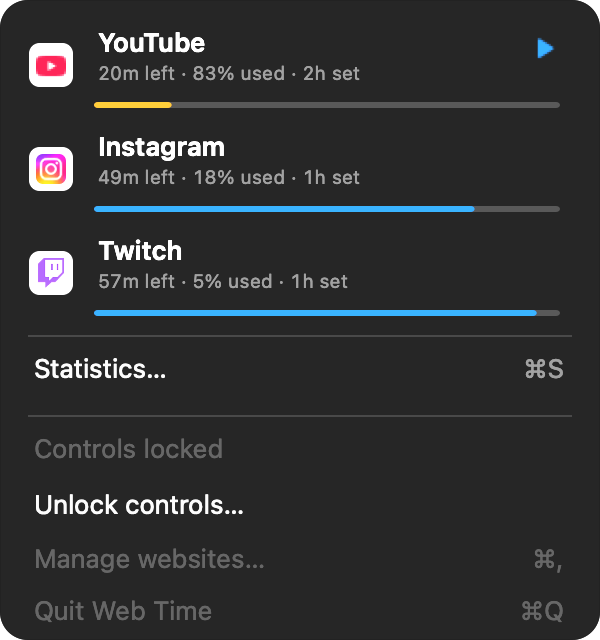
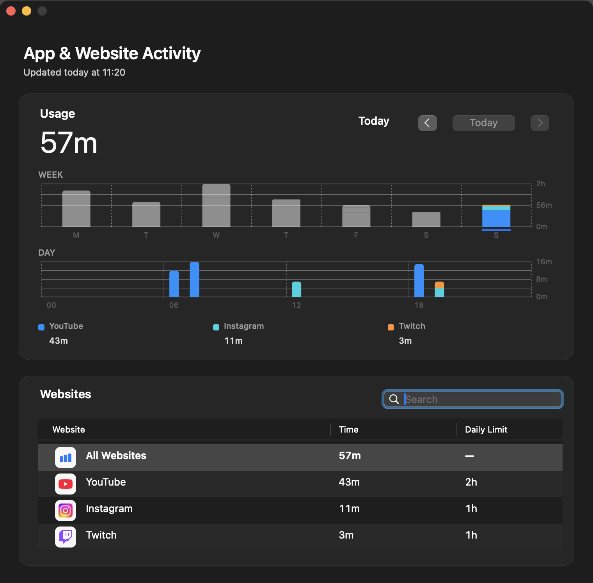

Web Time for macOS
Daily website limits.
Across every browser.
Web Time tracks usage locally and blocks each distracting website when its daily allowance runs out.
Requires macOS 13 or later · Free and open source

One allowance. Everywhere.
Safari. Chrome. Firefox.
It all counts.
Web Time watches local network activity instead of browser history, so changing browsers doesn’t reset the clock.
A clear picture
See where the
time went.
Screen Time–style daily and weekly charts show usage by website, hour, and allowance. Everything stays on your Mac.

Private by design
Your focus stays yours.
So does your data.
Your settings, activity, and cached site icons stay on your Mac. Web Time has no analytics, advertising, or telemetry.
Read the privacy detailsWeb Time
Make an hour
feel like yours again.
Download for Mac
MIT licensed · Built natively with Swift